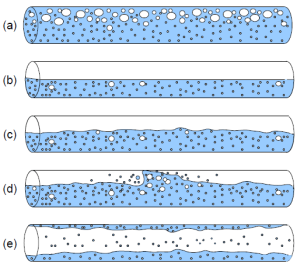
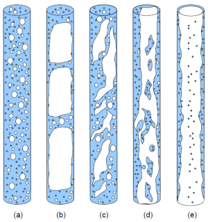

dp_twoPhaseOverall_DPPressure loss of straight pipe for two phase flow | calculate (frictional, momentum, geodetic) pressure loss |
|
Information
This information is part of the Modelica Standard Library maintained by the Modelica Association.
Calculation of pressure loss for two phase flow in a horizontal or vertical straight pipe for an overall flow regime considering frictional, momentum and geodetic pressure loss.
Generally the pressure loss for two phase flow in a horizontal or a vertical straight pipe can be calculated for the following fluid flow regimes:
Horizontal fluid flow [(a) bubble flow, (b) stratified flow, (c) wavy flow, (d) slug flow, (e) annular flow]:

Vertical fluid flow [(a) bubble flow, (b) plug slug flow, (c) foam flow, (d) annular streak flow, (e) annular flow]:

Syntax
Inputs (3)
| IN_con |
Type: dp_twoPhaseOverall_IN_con Description: Input record for function dp_twoPhaseOverall_DP |
|---|---|
| IN_var |
Type: dp_twoPhaseOverall_IN_var Description: Input record for function dp_twoPhaseOverall_DP |
| m_flow |
Type: MassFlowRate (kg/s) Description: Mass flow rate |
Outputs (1)
| DP |
Type: Pressure (Pa) Description: Two phase pressure loss |
|---|